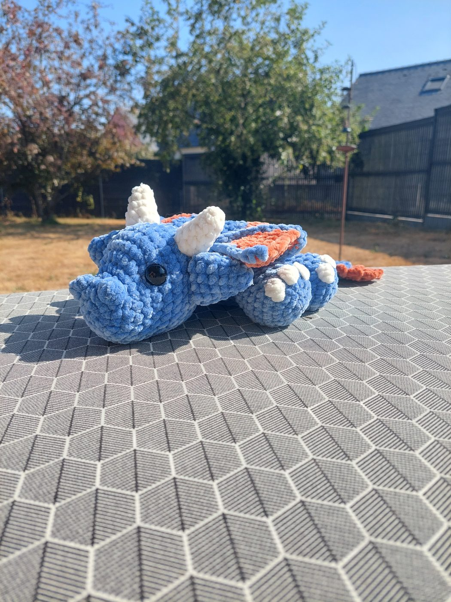
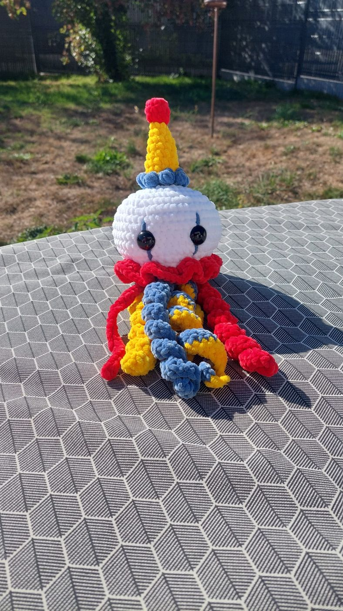
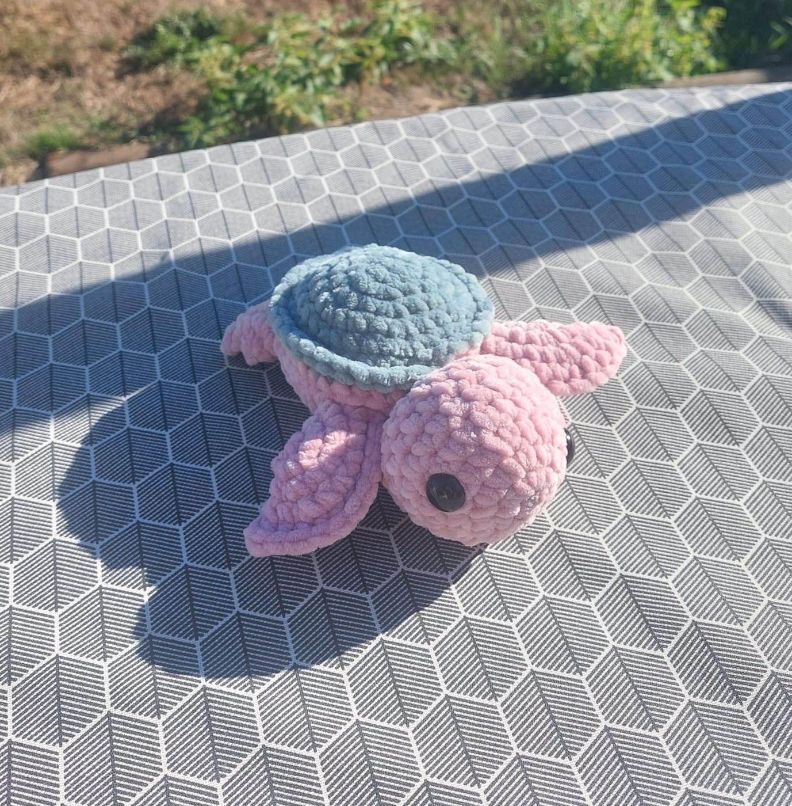

Des créations au crochet qui ont une âme
Bienvenue chez Mailles et Bidouille, un univers doux et fait main où chaque maille compte.

Étudiante au quotidien, crocheteuse passionnée le reste du temps
Bonjour ! Je m'appelle Angèle.
Étudiante, je suis passionnée par le crochet depuis plusieurs années.
Mailles et Bidouille, c'est mon petit espace d'expression et de douceur à côté de mes études : un moyen de ralentir, d'imaginer et de donner vie à des créations uniques, maille après maille.
Chaque pièce est entièrement pensée et crochetée à la main avec soin et patience.
Ici, pas de production en série, seulement du fait main avec du cœur !
Un aperçu de l'atelier
Des peluches et accessoires faits main avec des détails brodés avec soin.

Les poulpes clowns
Un chapeau pointu, une collerette et des tentacules colorés.

Les tortues
Roses et bleues, avec une carapace contrastée.

Le pélican & le dragon
Les modèles grands formats qui ne passent pas inaperçus.
Bientôt disponible : découvrez prochainement mes porte-clés, dessous de verre et déco de Noël !
Voir toutes les peluchesOù trouver mes créations ?
Les pièces disponibles sont sur mon dressing Vinted. Une pièce vous plaît mais n'y est plus ? Écrivez-moi : je pourrai peut-être en crocheter une autre.
Une question, une envie de création sur-mesure ?
N'hésitez pas à m'écrire, je vous réponds avec plaisir.